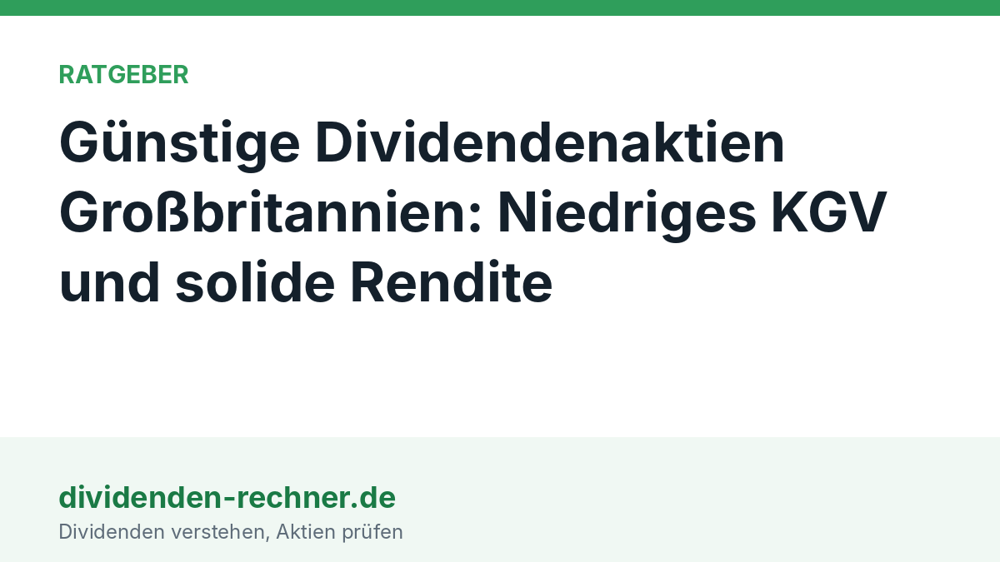

Ratgeber
Günstige Dividendenaktien Großbritannien: Niedriges KGV und solide Rendite
Günstige Dividendenaktien Großbritannien: Die Top 10 aus Großbritannien mit Kennzahlen, Geschäftsmodell und Entwicklung der letzten Jahre. Stand November 2026.

Stand: 27.11.2026.
Niedrig bewertet und trotzdem eine Dividende: Diese Liste zeigt die Aktien aus Großbritannien mit dem niedrigsten KGV bei solider Rendite.
Die Rangfolge richtet sich nach dem Kurs-Gewinn-Verhältnis (3 bis 15) bei mindestens 2 Prozent Rendite. Berücksichtigt werden Aktien aus Großbritannien mit einem Börsenwert ab 3 Mrd. Euro, Kleinfirmen und Doppellistungen bleiben draußen.
Die Top 10 im Überblick
| Firma | KGV | Rendite |
|---|---|---|
| 1. |
7,9 | 2,5 % |
| 2. |
8,9 | 4,6 % |
| 3. Barclays | 9,5 | 2,1 % |
| 4. |
9,7 | 5,2 % |
| 5. |
9,7 | 5,7 % |
| 6. |
10,1 | 6,7 % |
| 7. Torm | 11,7 | 6,0 % |
| 8. |
12,0 | 3,8 % |
| 9. RIO Tinto | 12,4 | 5,0 % |
| 10. |
12,5 | 3,5 % |
Die Firmen im Einzelnen
1. Shaftesbury Capital
Shaftesbury Capital ist ein britischer Immobilienkonzern mit Einzelhandels- und Gastronomieflächen im Londoner West End. Die Einnahmen stammen aus Mieten. Das KGV beträgt 7,9, dazu kommen 2,5 % Dividendenrendite. Auf fünf Jahre betrachtet gilt: der Umsatz wuchs um 26,4 % und die Dividende wuchs um 46,4 % pro Jahr. Shaftesbury Capital steigerte im Geschäftsjahr 2025 den Umsatz um 5,2 % und den Gewinn um 34,9 %.
2. NatWest
NatWest ist eine britische Großbank, die mehrheitlich dem Staat gehörte, mit Privat- und Firmenkunden. Ein KGV von 8,9 und 4,6 % Rendite machen NatWest zu einem der günstigeren Werte. Über die vergangenen fünf Jahre gerechnet: die Dividende wuchs um 38,2 % pro Jahr.
3. Barclays
Barclays ist eine britische Großbank mit Privatkundengeschäft, Kreditkarten und Investmentbanking. Ein KGV von 9,5 und 2,1 % Rendite machen Barclays zu einem der günstigeren Werte. Im Fünfjahresschnitt gilt: der Umsatz wuchs um 5,4 % und der Gewinn wuchs um 24,7 % jährlich. Das letzte Jahr (2025) brachte beim Umsatz ein Plus von 3,7 % und beim Gewinn ein Plus von 13,7 %.
4. British Land Company Public Limited Company(the)
British Land ist ein britischer Immobilienkonzern mit Einzelhandels-, Büro- und Logistikimmobilien. Die Einnahmen stammen aus Mieten. Ein KGV von 9,7 und 5,2 % Rendite machen British Land Company Public Limited Company(the) zu einem der günstigeren Werte. Das letzte Jahr (2026) brachte beim Umsatz ein Plus von 15,2 % und beim Gewinn ein Plus von 34,3 %. Über die vergangenen fünf Jahre gerechnet: der Umsatz wuchs um 2,2 % pro Jahr.
5. Tritax BIG BOX Reit
Tritax Big Box ist ein britischer Immobilieninvestor für große Logistikhallen, die an Handels- und Logistikunternehmen vermietet werden. Das KGV beträgt 9,7, dazu kommen 5,7 % Dividendenrendite. Über die vergangenen fünf Jahre gerechnet: der Gewinn schrumpfte um 4,2 % pro Jahr.
6. Aberdeen
Aberdeen Group ist ein britischer Vermögensverwalter mit Fonds für institutionelle und private Anleger. Die Erlöse stammen aus Verwaltungsgebühren. Das KGV beträgt 10,1, dazu kommen 6,7 % Dividendenrendite. Über die vergangenen fünf Jahre gerechnet: der Umsatz schrumpfte um 2,6 %, der Gewinn schrumpfte um 14,2 % und die Dividende schrumpfte um 7,8 % pro Jahr. Das letzte Jahr (2025) brachte beim Umsatz ein Minus von 2,1 % und beim Gewinn ein Plus von 63,7 %.
7. Torm
Torm betreibt Produkt- und Chemikalientanker, die Öl- und Chemieprodukte weltweit transportieren. Die Erlöse stammen aus Charterraten. Ein KGV von 11,7 und 6,0 % Rendite machen Torm zu einem der günstigeren Werte. Im Geschäftsjahr 2025 lag der Umsatz 14,1 % unter und der Gewinn 53,4 % unter dem Vorjahr.
8. Hikma Pharmaceuticals Public
Hikma ist ein britisch-jordanischer Pharmakonzern, der Generika und Markenmedikamente herstellt, vor allem für die USA und Nordafrika. Das KGV beträgt 12,0, dazu kommen 3,8 % Dividendenrendite. Auf fünf Jahre betrachtet gilt: der Umsatz wuchs um 7,4 %, der Gewinn schrumpfte um 1,4 % und die Dividende wuchs um 12,7 % pro Jahr. Hikma Pharmaceuticals Public steigerte im Geschäftsjahr 2025 den Umsatz um 7,1 % und den Gewinn um 12,0 %.
9. RIO Tinto
Rio Tinto fördert Eisenerz, Aluminium und Kupfer und gehört zu den größten Bergbaukonzernen der Welt. Ein KGV von 12,4 und 5,0 % Rendite machen RIO Tinto zu einem der günstigeren Werte. Im Geschäftsjahr 2025 lag der Umsatz 7,4 % über und der Gewinn 13,7 % unter dem Vorjahr. Im Fünfjahresschnitt gilt: der Umsatz wuchs um 5,3 %, der Gewinn wuchs um 0,4 % und die Dividende schrumpfte um 0,1 % jährlich.
10. Reckitt
Reckitt stellt Haushalts- und Gesundheitsprodukte her, mit Marken wie Dettol, Durex und Finish. Ein KGV von 12,5 und 3,5 % Rendite machen Reckitt zu einem der günstigeren Werte. Im Geschäftsjahr 2025 stieg der Umsatz um 0,3 %, der Gewinn stieg um 123,1 %. Im Fünfjahresschnitt gilt: der Umsatz wuchs um 0,3 %, der Gewinn wuchs um 21,8 % und die Dividende wuchs um 3,4 % jährlich.
Häufige Fragen
Was zeigt diese Liste für Großbritannien?
Die Liste ordnet Dividendenaktien aus Großbritannien nach dem Kurs-Gewinn-Verhältnis (3 bis 15) bei mindestens 2 Prozent Rendite. Die Zahlen stammen aus dem Aktien-Hub von Dividenden-Rechner.de und werden regelmäßig neu berechnet.
Wie wird die Liste berechnet?
Berücksichtigt werden Dividendenaktien aus Großbritannien mit einem Börsenwert ab 3 Mrd. Euro. Gleiche Firmen mit mehreren Börsenplätzen zählen nur einmal. Datengrundlage sind die letzten berichteten Geschäftszahlen und die aktuellen Kurse.
Ist die Liste eine Kaufempfehlung?
Nein. Die Liste ist eine Auswertung nach festen Regeln. Vor einer Anlageentscheidung gehören Geschäftsmodell, Verschuldung und Branche geprüft.
Bei Google als bevorzugte Quelle hinzufügen
Hinweis: Dieser Text dient der allgemeinen Information und ist weder Anlage-, Steuer- noch Rechtsberatung. Kapitalanlagen sind mit Risiken verbunden, bis hin zum Totalverlust.